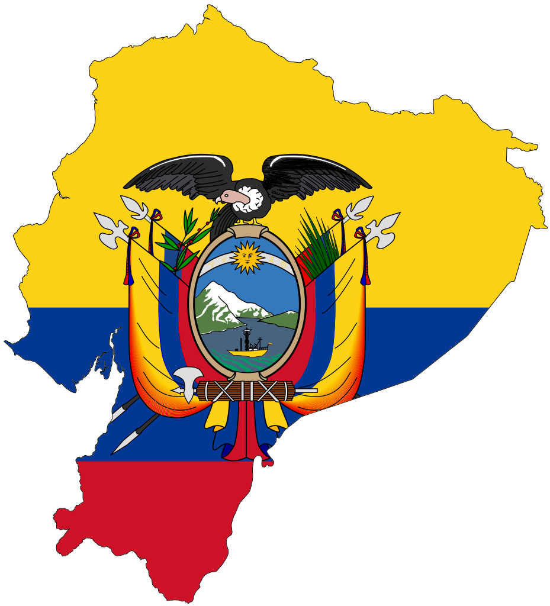

Starbucks: Un Gigante del Café
Breve reseña histórica
Starbucks, fundada en 1971 en Seattle, Washington, se ha convertido en la cadena de cafeterías más
grande del mundo, con más de 33.000 locales en 80 países. Su éxito se basa en ofrecer una experiencia
única que combina café de alta calidad, bebidas innovadoras, un ambiente acogedor y un compromiso con la
responsabilidad social.
Ecuador: El país que uno cuatro mundos
El país sudaméricano que cuenta con mucha diversidad

Ecuador, conocido como "El país de los cuatro mundos", presume de una diversidad natural sin igual. Sus
cuatro regiones, la Costa, la Sierra, la Amazonía y las Islas Galápagos, albergan una riqueza de flora,
fauna y paisajes que lo convierten en un destino único para viajeros de todo el mundo.
La lectura, el primer paso al intelectualismo
La lectura es considerada como el ejercicio que la mente humana necesita previo a alcanzar el
intelectualismo
La lectura es un hábito fundamental para el desarrollo intelectual y personal,
permitiéndonos crecer como individuos y contribuir a una sociedad más informada y crítica.